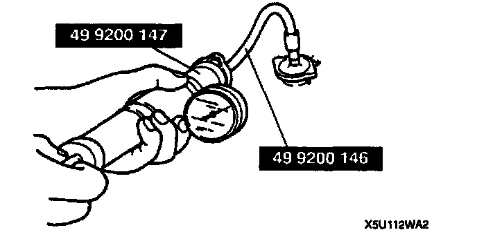

Cooling System: Testing and Inspection
ENGINE COOLANT LEAKAGE INSPECTION1. Inspect the coolant level.
2. Remove the radiator cap.

3. Connect a radiator cap tester and the Special Service Tool (SST) to the radiator filler neck.
Caution:
^ Applying more than 123 kPa (1.25 kgf/cm2 17.8 psi) can damage the hoses, fittings, and other components, and cause leaks.
4. Apply pressure to the radiator.
Pressure: 123 kPa (1.25 kgf/cm2,17.8 psi)
5. Verify that the pressure is held. If not, inspect the system for coolant leakage.